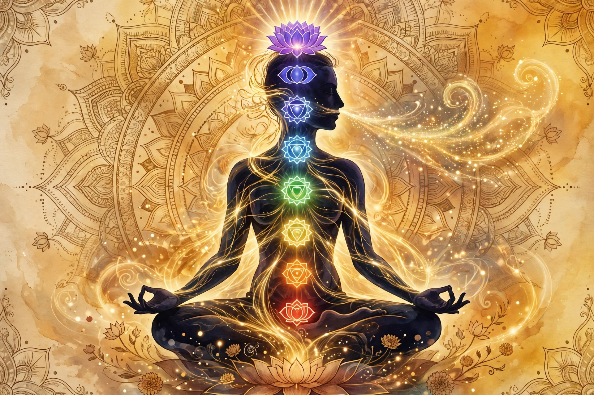

Prana (Sanskrit: प्राण, prāṇa; "life force", "vital principle") in Indian religions is the universal life energy that permeates reality and animates living beings. It is a central concept in Ayurveda and yoga, where it is believed to flow through a network of channels called nadis and energy centres called chakras.
The concept appears in the Vedas and Upanishads: the Chandogya and Brihadaranyaka Upanishads describe prana as the highest principle, and the Prashna Upanishad details it extensively.
Prana is subdivided into five major vayus (winds): prana (inward, respiration), apana (downward, elimination), samana (digestion), udana (upward, speech), and vyana (pervasive, circulation).
Pranayama regulates prana through breath control. Concepts parallel Chinese qi and Japanese ki.